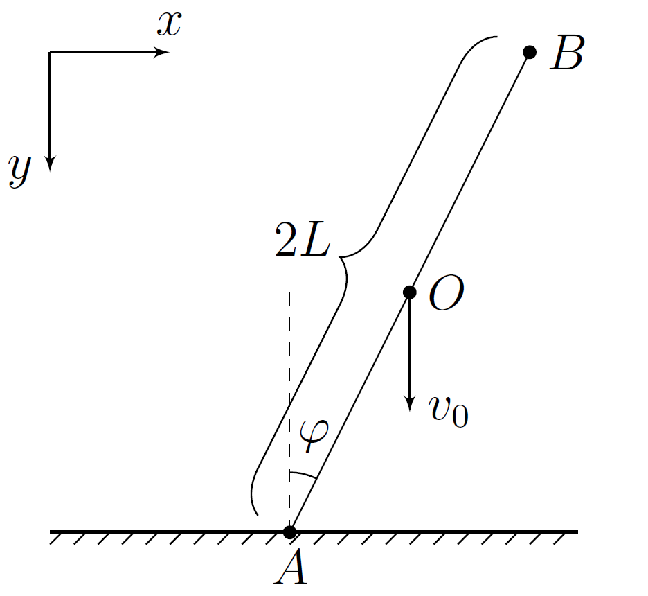

X22 (2022) — English translation
Elastic and absolutely inelastic collisions are just models within which most problems are solved. They turn out to be applicable in the interaction of certain materials. For example, the model of elastic collisions well describes Newton's Cradle, in which metal balls suspended on threads collide with each other in such a way that during collisions between the balls the loss of mechanical energy is insignificant. The model of an absolutely inelastic collision describes a much larger number of phenomena, such as, for example, a stone falling on asphalt or a ballistic pendulum. In reality, all collisions are partially inelastic. For example, if you release a rubber ball without an initial speed, then each time it hits the floor surface its speed will decrease. The phenomenon of hysteresis, when bodies with good elastic properties have residual deformation after being subjected to a large external force, is also a good example of a partially inelastic interaction. A characteristic of a partially inelastic collision is the recovery coefficient $k$, with $0 < k < 1$. In the absence of friction between contacting surfaces, it is defined as follows: Let $E_0$ be the total kinetic energy of the colliding bodies just before their collision, and $W$ be the maximum loss of their total kinetic energy spent on the deformation of the contacting surfaces. Then, immediately after the collision of the bodies, their total kinetic energy is equal to $E=E_0-E_{\text{деф}}$, where $E_{\text{деф}}$ is the residual energy of surface deformation, equal to $$E_{\text{деф}}=W(1-k) $$ Поясним полученный результат на примере шарика, прыгающего на частично упругой поверхности: Если шарик отпустить без начальной скорости с высоты $H$ над горизонтальной поверхностью с коэффициентом восстановления $k$, то после соударения с ней шарик подпрыгнет на высоту $h=kH$. Let's move on to the main task.
A homogeneous rod $AB$ of mass $m$ and length $2L$ falls on a horizontal surface with a coefficient of restitution $k$, making an angle $\varphi$ with the vertical, at a speed $v_0$. The coefficient of friction between the rod and the surface is $\mu$. The rod touches the surface with end $A$.

Let's direct the $x$ axis horizontally (to the right), and the $y$ axis vertically (downwards). During the impact, let us denote by $v_x$ and $v_y$ the projections of the velocity of the center of the rod $O$ on the coordinate axis, by $\omega$ the angular velocity of the rod (direction of rotation clockwise), and by $v_{Ax}$ and $v_{Ay}$ the projections of the velocity of the point $A$ on the axis $x$ and $y$ respectively. Also, by $F_x$ we denote the projection of the friction force on the axis $x$, and by $N$ we denote the force of the normal reaction of the surface ($N_y=-N$). Consider that during the impact the angle $\varphi$ remains constant.
Thus, two situations are possible: 1) There is no slippage during the impact; 2) When slipping $F_x>0$. Next, you have to find out at what ratios $\varphi$ and $\mu$ each of them is realized. A necessary condition for the realization of the second situation is $v_{Ax}<0$. Further, within the framework of this part of the problem, this condition is satisfied.
We have obtained the conditions under which each type of interaction between the rod and the surface occurs. Let's move on to a description of the collision processes. Since slippage is possible in this system, kinetic energy, in addition to residual deformation of the surface, can also be converted into heat release under the influence of friction. After the impact, the kinetic energy of the rod $E$ is equal to $$E=E_0-E_{\text{деф}} +A_{\text{тр}} $$ где $A_{\text{tr}}$ — работа силы трения, а $E_0$ и $E_{\text{def}}$ is determined in the same way as in the introduction. Also, within the framework of this problem, we can assume that the friction force arising in the system does not lead to additional surface deformations.
In this part of the problem, at all points, assume that $\mu>\mu_0$.
For this part of the problem, assume that $\mu<\mu_0$ and angle $\varphi$ falls within the range found in step $A7$.
Source: https://pho.rs/p/502